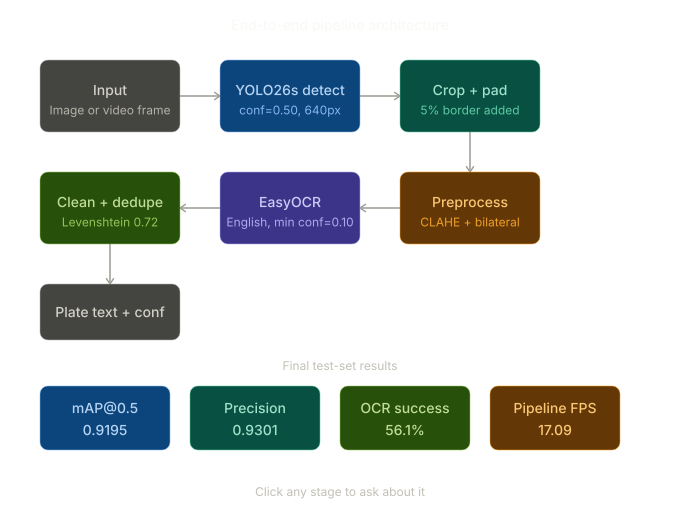
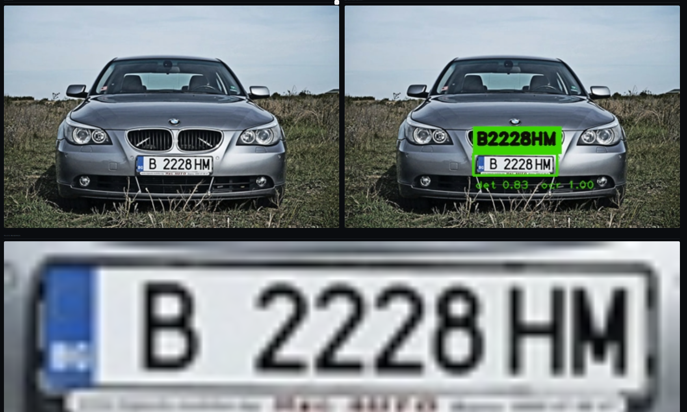
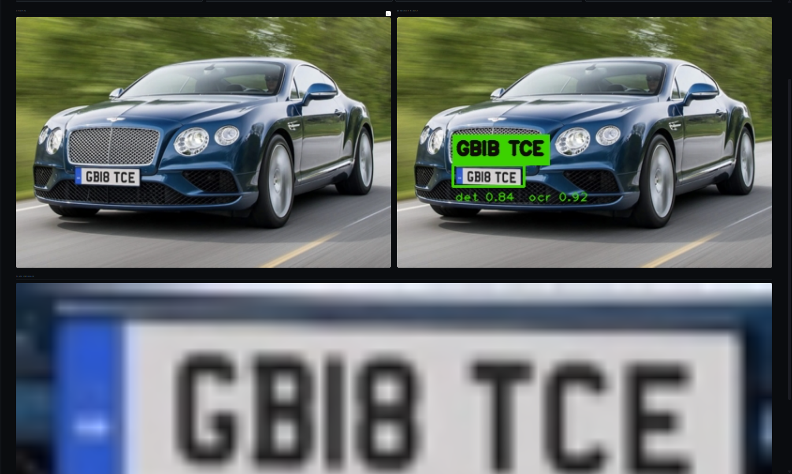
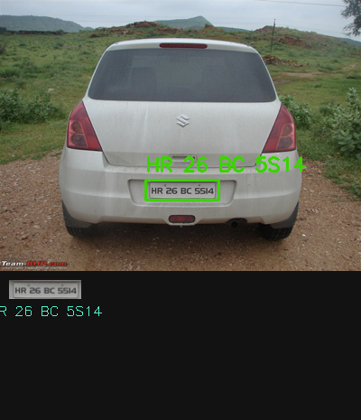
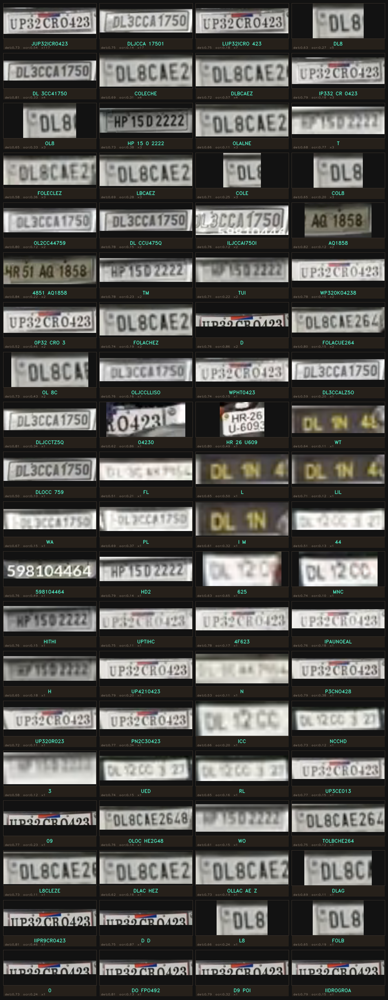

https://github.com/user-attachments/assets/4b0aa03b-f12f-48b2-8f14-e1c1130289bd
The ALPR Mission
Scalable vehicle identification is crucial for traffic management and security. This project implements a robust 4-stage pipeline that handles everything from detection to deduplication of noisy video OCR reads.
Processing Pipeline
- Stage 1: YOLO26s Detection
- Stage 2: Crop + 5% Fixed Padding
- Stage 3: CLAHE + Bilateral Preprocessing
- Stage 4: EasyOCR + Levenshtein Deduplication
Modular Layout

Project Methodology
01. Heavyweight Detector Training
Trained a YOLO26s model on 27,900 images. Implemented an automatic checkpoint layered system for training on Kaggle T4 GPUs, achieving a 0.9195 mAP@0.5 on the test set—outperforming the validation split and indicating excellent generalization.
02. Advanced Image Preprocessing
Friction between detection and OCR was minimized using CLAHE (Contrast Limited Adaptive Histogram Equalization) and Bilateral filtering. This enhanced character edges and reduced noise, leading to significantly more reliable OCR reads in low-light conditions.
03. Full-Stack Deployment
Architected a Streamlit web application supporting batch image processing
and frame-by-frame video analysis. Models are cached per session using @st.cache_resource
for instantaneous interactive performance.
Detection & OCR Results

Successful Detection & Clear OCR Read

Multi-Vehicle Tracking & Recognition

Batch Pipeline Processing & Plate Extraction

Deduplicated Plate Capture Contact Sheet
Live Demos
Detection Demo Videos
Full video inference runs with real-time bounding box overlay and confidence annotations.
License Plate Recognition System — Demo Run 1
Primary inference run demonstrating weapon localization with bounding boxes and class confidence scores.
License Plate Recognition System — Demo Run 2
Extended scenario testing model robustness under varied lighting and background clutter conditions.
Explore the Code
Check out the YOLO training notebooks and deployment scripts.